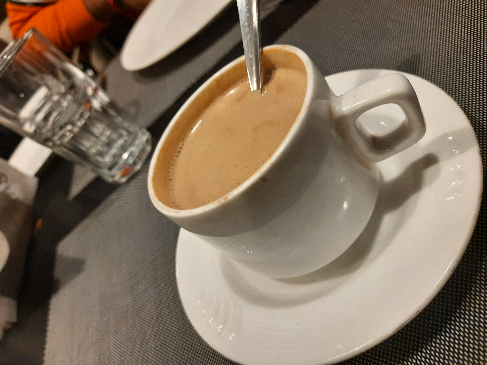
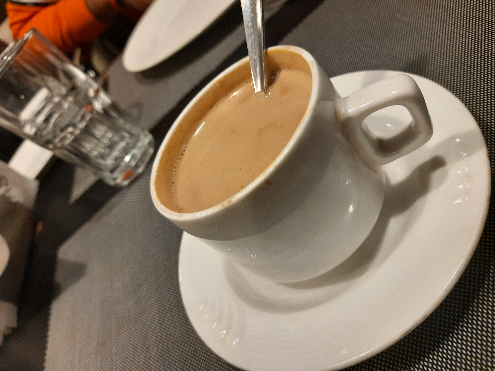

A permanent gang of friends, is the biggest myth, I would say. Just be independent, be friendly with
almost everyone you see, be versatile and learn a lot from everyone. Acads- lol !!!, scam it is (learn for 1 sem, then forget, repeat again),
not interested to speak on that more. Clubs-the place where the real learning starts, the place where I learnt how to organise and
collaborate, handle situations and most importantly, the best place where you get the best seniors. So, this would
be more than enough to share as of now, I guess. And, a lot more exciting stuffs are yet to happen.
Head hits with realization!!
Today, I had some quite impressive realizations. My close friend reminded me who I am. In layman terms, I love to take risks, was keeping no back-up plans, becuase I believe, keeping a back-up makes you less efficient to work towards your goals.
But, after my JEE, I have completely changed my fundamental identities, taking every step with a back-up. That's why, I was soo concerned to have a back-up career along with my Aim. Thinking that, I could focus on everything I want, which made my efficiency to almost zero at anything.
Even tough, I know That One cannot have everything he wants,BUT, still I was trying to do that.What a foolish & coward mind right?!. Anyways, thanks again for reminding, 'You cannot measure the depth, without wetting yourself.Take risk, It is not as hard as it seems to be.'
 
